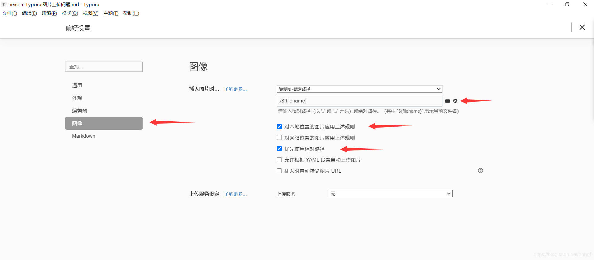

enable_shared_from_this允许一个对象从this指针获取另外一个shared_ptr对象，当然这个对象必须被一个shared_ptr管理。
场景 主要场合是在回调函数中，例如以下代码，Factory负责创建一些对象，这些对像在退出时对调用Factory的do_some_wor()函数。因此Factor的生命周期应该长于T，为了这个目的，T应该保存一个shared_ptr的变量。

1 2 3 4 5 6 7 8 class Factory : public enable_shared_from_this<Factory>{public : T create_some_objiect () { return T ([factory = shared_from_this ()](){ factory.do_some_work (); }); } };
源码 1 2 3 4 5 6 7 8 9 10 11 12 13 14 15 16 17 18 19 20 21 22 23 24 25 26 27 28 29 30 31 32 33 34 35 36 37 template <typename _Tp>class enable_shared_from_this { protected : constexpr enable_shared_from_this () noexcept enable_shared_from_this (const enable_shared_from_this&) noexcept { } enable_shared_from_this& operator =(const enable_shared_from_this&) noexcept { return *this ; } ~enable_shared_from_this () { } public : shared_ptr<_Tp> shared_from_this () { return shared_ptr <_Tp>(this ->_M_weak_this); } shared_ptr<const _Tp> shared_from_this () const { return shared_ptr <const _Tp>(this ->_M_weak_this); }private : template <typename _Tp1> void _M_weak_assign(_Tp1* __p, const __shared_count<>& __n) const noexcept { _M_weak_this._M_assign(__p, __n); } friend const enable_shared_from_this* __enable_shared_from_this_base(const __shared_count<>&, const enable_shared_from_this* __p) { return __p; } template <typename , _Lock_policy> friend class __shared_ptr ; mutable weak_ptr<_Tp> _M_weak_this; };
上述代码来自gcc，可以看到enable_shared_from_this类通过weak_ptr<_Tp>管理对象。但是奇怪的是，构造函数并没有对_M_weak_this进行赋值。_M_weak_this的构造实在shared_ptr对象构造时赋值的。
1 2 3 4 5 6 7 8 9 10 11 12 13 14 15 class __shared_ptr { __shared_ptr(_Yp* __p) { _M_enable_shared_from_this_with(__p); } _M_enable_shared_from_this_with(_Yp* __p) noexcept { if (auto __base = __enable_shared_from_this_base(_M_refcount, __p)) __base->_M_weak_assign(const_cast <_Yp2*>(__p), _M_refcount); } _M_enable_shared_from_this_with(_Yp*) noexcept { } };
在shared_ptr构造时，会调用_M_enable_shared_from_this_with，如果对象继承了enable_shared_from_this那么会调用__enable_shared_from_this_base和_M_weak_assign创建_M_weak_this。值得注意的是，shared_ptr_base.h 中定义了一个__enable_shared_from_this，这个类与enable_share_from_this除了名字外几乎一模一样。
总结 enable_shared_from_this的构造函数没有赋值_M_weak_this。原因主要为，如果是一个栈对象，enable_shared_from_this是不适用的。只有当该对象被一个shared_ptr管理时，在创建share_ptr对象时，赋值_M_weak_this。
问题
_M_weak_this为什么要用cosnt修饰？__enable_shared_from_this_base为什么要声明为friend，明明没有访问到enable_shared_from_this的私有成员？
_M_enable_shared_from_this_with 调用__enable_shared_from_this_base时，发生了__p类型从_Yp*到enable_shared_from_this*的隐式转换，这是如何实现的？